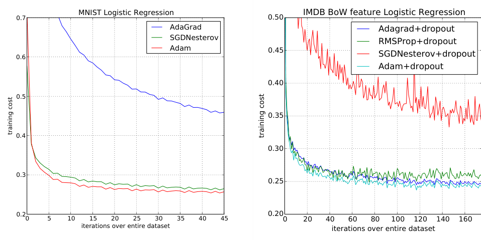
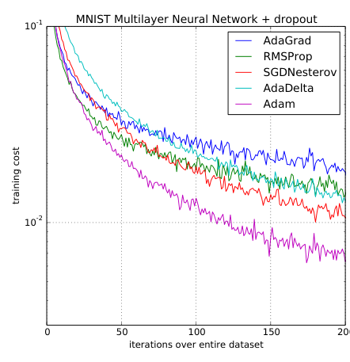
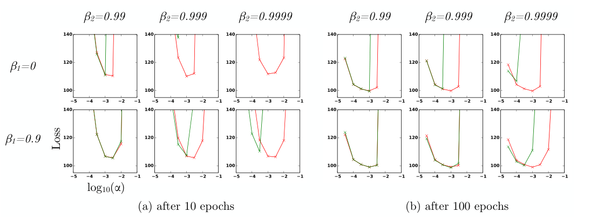

每个参数，自己定步长
Kingma 和 Ba 2014 年的论文《Adam: A Method for Stochastic Optimization》不改模型，只改「拿到梯度之后怎么调参数」。它的做法是：给每个参数配一个自动调节的步长。方向用最近梯度的平均，步子大小按最近梯度的平方平均来缩放，梯度一直大就迈小步，一直小就迈大步；再补上一个「开头偏小」的修正。结果是几乎不用调学习率就能稳定训练各种网络。004 的 Transformer 用的就是它，后来它成了深度学习的默认优化器。
- 正文只走一条线：SGD 的两个毛病，前人各补了一半，直接拼起来又会踩两个坑 → Adam 的一步和三个零件，各对着哪个毛病 → 哪个实验证明了哪一步。只读每节的标题和每段第一句，也能串起来。
- 算法的七行伪代码就在正文（第 2 节），每一行配了白话。推导、符号表、概念解释（指数移动平均、遗憾）、收敛性证明、和前人方法的关系、实验设置、扩展、当时的背景，都在页尾的附录里，默认折叠，标明对应原文第几节。
- 小数字都用程序验算过：为讲解设定的标「示意」。
- 本篇和前四篇不同，不讲「模型长什么样」，只讲「怎么训练」。损失、梯度、SGD、学习率在 001 NPLM 讲过，梯度裁剪在 002 Seq2Seq 讲过，这里只提一句。读完回头看 004 Transformer 里那行「β₁ = 0.9，β₂ = 0.98，ε = 10⁻⁹」，附录 G 逐个讲了每个数在管什么。
1要解决的问题：SGD 卡在哪
每个模型训练时都要一个优化器（optimizer）：拿到梯度之后，具体怎么更新参数的规则。
从「所有参数共用一个学习率」，到「每个参数各自调步长」，再到 Adam，是同一条演化线。本篇讲清这条线的终点（前四篇各用了什么优化器，见附录 H）。注意：同一个模型、同一份数据，换优化器，训练快慢和能不能训得动可能差很多，但模型能表示什么不变。
SGD 的更新式是 θ ← θ − α · g：θ 是参数，g 是这一小批数据算出的梯度，α 是学习率。每个参数的步长等于 α 乘自己的梯度。原文第 1 节把要优化的目标限定为随机目标函数：目标由一批批数据的子函数相加而成，或者带着 dropout 这类额外噪声；参数维度很高，所以排除二阶方法，只用一阶梯度。在这个前提下，SGD 有两个毛病。
毛病一：一个学习率，管不了所有参数
不同参数的梯度大小可以差好几个数量级。比如嵌入层里高频词那几行每一步都有梯度，生僻词那几行大部分步骤梯度为 0；原文 6.3 节也说卷积网络里不同层的梯度「差异巨大」。取两个参数对比一下：
毛病二：小批量梯度有噪声
每一步的梯度只来自随机的一小批样本，是真实梯度的带噪估计。噪声大的时候，相邻两步的方向可能相反，参数在原地来回抖。想象一条斜着向下的狭长山谷：梯度主要指向两侧陡坡，沿谷底向下的分量反而小。SGD 在两壁之间来回跳，沿谷底走得很慢。
前人的两条补救路线，各补了一半
两个毛病对应两种修补：来回抖，就别只信这一步的梯度，把最近几步取平均，这是动量；尺度悬殊，就让每个参数按自己的梯度大小缩放步长，这是自适应学习率。后者在 Adam 之前有两个代表：
- AdaGrad（Duchi 等 2011）：把每个参数从开头到现在的梯度平方全部累加，更新量是 g 除以累加和的平方根。很少出现梯度的参数累加值小、步长相对大，能抓住罕见特征，擅长稀疏梯度。缺点是累加和只增不减，步长单调变小。
- RMSProp（Tieleman 和 Hinton 2012，出自 Hinton 的 Coursera 课程讲义）：把「全部累加」换成「只看最近一段」的滑动平均，步长不会一路衰减，能适应目标的变化。但原文第 5 节指出它没有偏差修正，而且动量和缩放的结合方式不够干净。
直接把两条路线拼起来，会踩两个坑
一个好的随机优化器要同时做到五件事：每个参数步长合适；对噪声稳健；能处理稀疏梯度（AdaGrad 擅长）；能处理不断变化的目标（RMSProp 擅长）；开销小，每个参数只能多存很少的东西。原文第 1 节的目标就是「结合这两种新近流行的方法的优点」。但直接拼有两个坑：
| 坑 | 为什么会出现 | 本文怎么补 |
|---|---|---|
| 开头步长过大 | 要兼顾稀疏梯度，梯度平方的平均得看很长的历史（β₂ 接近 1）。可平均值从 0 起步，β₂ 越接近 1 开头越偏小；它在分母上，于是开头步长越大。RMSProp 就栽在这里，没有修正时常常发散 | 偏差修正（第三步） |
| 动量怎么加 | RMSProp 加动量的一种做法是对「已经缩放过的梯度」做动量，两件事搅在一起 | 先分别估好梯度的均值 m 和尺度 v，最后再相除（第一、二步） |
另外两条路也不通：用二阶方法精确算曲率，参数是百万级时 d × d 的矩阵存不下也求不了逆（原文只说高阶方法「不适合」，这条原因是我补充的）；人工给每个参数调学习率，参数成千上万，不可能。所以需要的是：不用二阶信息、只多存两个向量、自动给每个参数配步长、开头也稳。这就是 Adam 的设计目标。
2Adam 的一步：两个平均，一次相除
两个毛病和两个坑都摆出来了，Adam 的做法可以一次看全：先把原文 Algorithm 1 原样列出。所有向量运算都是逐元素的，也就是每个参数各算各的：
初始化： m₀ = 0，v₀ = 0，t = 0 循环直到收敛： t ← t + 1 gₜ = ∇θ fₜ(θₜ₋₁) ① 取这一小批的梯度 mₜ = β₁·mₜ₋₁ + (1−β₁)·gₜ ② 梯度的平均（一阶矩，管方向） vₜ = β₂·vₜ₋₁ + (1−β₂)·gₜ² ③ 梯度平方的平均（二阶矩，管尺度） m̂ₜ = mₜ / (1−β₁ᵗ) ④ 偏差修正 v̂ₜ = vₜ / (1−β₂ᵗ) ⑤ 偏差修正 θₜ = θₜ₋₁ − α · m̂ₜ / (√v̂ₜ + ε) ⑥ 更新
| 行 | 解决的问题 | 在哪讲 |
|---|---|---|
| ② | 噪声大、方向抖（毛病二） | 第一步（m） |
| ③ 和 ⑥ 里的除法 | 不同参数尺度悬殊（毛病一） | 第二步（v） |
| ④ ⑤ | 从 0 起步让开头估计偏小、步长偏大 | 第三步 |
| ε | v̂ 接近 0 时防止除以 0 | 附录 G |
每个零件都对应一个需求，没有多余的东西。额外存储是每个参数两个数（m 和 v），计算只是几次逐元素乘加，和 SGD 在一个量级。摘要里说它「计算高效、内存需求小」，指的就是这个。名字 Adam 来自 adaptive moment estimation，自适应矩估计。
原文给的默认值：α = 0.001，β₁ = 0.9，β₂ = 0.999，ε = 10⁻⁸。
下面三节按这几行的顺序拆开：先讲 ② 行的 m，再讲 ③ 行和 ⑥ 行里的除法，最后讲 ④ ⑤ 两行的偏差修正，每一节末尾点出它对着上面哪个毛病。
3第一步：用平均梯度代替这一步的梯度
做什么
更新量的分子不用这一步的 gₜ，而用它的 EMA mₜ。β₁ = 0.9，相当于平均最近约 10 步。原文把它叫梯度的一阶矩估计：「矩」是统计术语，一阶矩就是均值 E[g]，m 是它的估计。
这个平均叫指数移动平均（EMA）：手里只留一个「当前平均值」，每一步按「旧平均 × β₁ + 新梯度 × (1 − β₁)」更新，越新的梯度权重越大，越旧的忘得越快，每个参数只多存一个数。权重怎么随步数衰减见图 4，符号表见附录 B。
动量本身不是本文的新东西，原文引用了 Sutskever 等 2013 年的工作，实验里也拿 SGD + Nesterov 动量做对比。本文的新意在于把动量和下面的自适应步长放进一个统一的更新式。
为什么这样就行
为什么有效：平均 N 个独立的带噪估计，噪声幅度大约缩小到 1/√N，稳定的真实信号却不会被削弱，于是信号占比上升（统计常识，不是原文的论证）。看一个小例子，某个参数连续 10 步的梯度大方向一直为正，偶尔被噪声翻成负：
这一步对着毛病二（小批量梯度有噪声，方向来回抖）：噪声被平均掉，信号留下来。精确写法就是上面 ② 行，EMA 的式子和符号表见附录 B。
4第二步：用梯度的「典型大小」去除
做什么
回到毛病一。一个参数的梯度一直很大，说明这条路很陡，一步迈小一点；一直很小，说明很平缓，可以大胆迈。具体做法：用这个参数梯度的典型大小去除它的更新量，相当于把所有参数的梯度拉到同一个尺度上。
典型大小用均方根量：梯度平方的平均，再开根号。梯度平方的平均 E[g²] 叫二阶（原点）矩，原文称「未中心化的方差」，因为方差要先减均值再平方，这里没减。
为什么用平方再开根，不用绝对值的平均？原文第 7 节把这件事推广了：平方对应 L2 范数，换成 Lₚ 范数也行，p 趋于无穷得到 AdaMax（附录 F）。L2 是最常用、数学上最顺手的选择，原文没有说一定要平方。
为什么这样就行
上面 ③ 行的形式和 m 完全一样，只是被平均的是梯度的平方。β₂ 默认 0.999，大约看最近 1000 步。图 1 里的 A、B 就这样解决了：A 的 g ≈ 100、√v ≈ 100，比值 ≈ 1；B 的 g ≈ 0.01、√v ≈ 0.01，比值也 ≈ 1。两个相差一万倍的参数，一步都约走 α。
- 稀疏梯度：一个参数大部分时候梯度为 0，它的 v 很小；偶尔来一个梯度，m̂/√v̂ 就比较大，得到一次较大的更新。罕见特征出现时，抓住机会学。这是 AdaGrad 擅长的事，Adam 继承了下来。
- 目标在变：v 是 EMA，旧梯度的影响会衰减。训练后期梯度变小，v 跟着变小，步长不会像 AdaGrad 那样被早期的大梯度永久压住。
这一步对着毛病一（一个学习率管不了所有参数）：每个参数的步子都被自己梯度的典型大小校准过。精确写法是 ③ 行和 ⑥ 行的分母，v 的递推式见附录 A。
5第三步：偏差修正，补上开头偏小
问题：从 0 起步，开头的平均会偏小
m 和 v 都从 0 开始。开头积累的数据很少，0 却占着大部分权重，估计值被拉向 0。比如 β₁ = 0.9、梯度恒为 2：第 1 步 m₁ = 0.9 × 0 + 0.1 × 2 = 0.2，真实平均明明是 2，只有十分之一；第 2 步 m₂ = 0.38，仍远低于 2。
修正的办法是除以 (1 − βᵗ)：第 1 步 1 − 0.9 = 0.1，m̂₁ = 0.2/0.1 = 2，一步到位；第 2 步 1 − 0.9² = 0.19，m̂₂ = 0.38/0.19 = 2。t 变大后 βᵗ 趋于 0，修正因子趋于 1，修正自然退场。
这对 v 特别要紧。β₂ = 0.999 时，1 − 0.999 在第 1 步只有 0.001，不修正的 v₁ 比真实值小 1000 倍；要到第 1000 步左右才积累到约 63%。而 v 在分母上：v 偏小，√v 偏小，步长就偏大。
为什么除的恰好是 1 − βᵗ
把递推展开，vₜ 是之前所有 gᵢ² 的加权和；在梯度的二阶矩平稳的前提下，vₜ 的期望恰好是真值的 (1 − β₂ᵗ) 倍，所以除以 (1 − β₂ᵗ) 就是无偏估计。m 同理。完整的展开和符号表见附录 A。
为什么对稀疏梯度尤其关键（原文第 3 节末尾）：稀疏梯度大部分时刻为 0，要估准二阶矩必须平均很长的历史，也就是 β₂ 要很接近 1。而 β₂ 越接近 1，不修正时开头的 v 偏小越严重。所以「稀疏 + 不修正」是最坏的组合。
这一步对着拼起来的第一个坑：开头步长过大。精确写法是 ④ ⑤ 两行，推导见附录 A。
6合起来：走一遍，再看三个性质
三个零件都讲完了，把它们拼起来走一遍，再看拼出来的更新有什么性质。
完整算一遍：两个参数，四步
用默认值 α = 0.001，β₁ = 0.9，β₂ = 0.999。参数 A 的梯度一直很大且稳定，参数 B 的梯度很小且方向不稳（示意）：
- A：100，80，120，100
- B：0.01，−0.01，0.01，0.01
| t | 参数 | gₜ | m̂ₜ | √v̂ₜ | m̂/√v̂ | Adam 一步 | SGD 一步 |
|---|---|---|---|---|---|---|---|
| 1 | A | 100 | 100 | 100 | 1.000 | 0.0010 | 0.1 |
| 1 | B | 0.01 | 0.01 | 0.01 | 1.000 | 0.0010 | 0.00001 |
| 2 | A | 80 | 89.47 | 90.55 | 0.988 | 0.00099 | 0.08 |
| 2 | B | −0.01 | −0.0005 | 0.01 | −0.053 | −0.000053 | −0.00001 |
| 3 | A | 120 | 100.74 | 101.33 | 0.994 | 0.00099 | 0.12 |
| 3 | B | 0.01 | 0.0034 | 0.01 | 0.336 | 0.00034 | 0.00001 |
| 4 | A | 100 | 100.52 | 101.0 | 0.995 | 0.00100 | 0.1 |
| 4 | B | 0.01 | 0.0053 | 0.01 | 0.529 | 0.00053 | 0.00001 |
更新规则的三个性质
原文 2.1 节设 ε = 0，把一步的有效步长记作 Δₜ = α · m̂ₜ/√v̂ₜ，然后讲了三个性质。
① 步长大致被 α 封顶：一个「信赖域」
原文给出两个上界，式子见附录 A：一般情况下一步不超过 α，只有梯度极端稀疏时才能到约 3.16α，下面说细一点。
第一种情况（(1 − β₁) > √(1 − β₂)）只发生在最极端的稀疏：一个梯度在之前所有步都是 0，只有这一步非零。默认值下 (1 − β₁) = 0.1，√(1 − β₂) ≈ 0.0316，上界是 0.1/0.0316 ≈ 3.16α。普通情形下，均值的绝对值不超过均方根，所以 m̂/√v̂ 在 ±1 以内，一步不超过约 α。
原文把这个性质解释为在当前参数周围划了一个信赖域：当前梯度估计只在这个范围内可信。好处是 α 有了直观含义，就是「一步最多走多远」，可以按先验估计它的量级，比如已知好的解离初值大概多远。
② 信噪比：方向越不可信，步子越小
原文把 m̂/√v̂ 叫作信噪比（并说这是「略微滥用术语」）。信号是梯度均值 m̂，噪声尺度是均方根 √v̂。比值接近 ±1，说明梯度一致、方向可信，迈满步；比值接近 0，说明梯度忽正忽负，步子自动缩小。
③ 对梯度整体缩放不敏感
把梯度整体乘一个常数 c：m̂ 乘 c，v̂ 乘 c²，√v̂ 乘 c，相除时抵消，(c·m̂)/√(c²·v̂) = m̂/√v̂。比如损失函数乘 10，梯度全部乘 10，SGD 的步子跟着乘 10，Adam 一步不变。对 loss 求和还是求平均，不会改变 Adam 的行为。严格说 ε 会破坏精确的不变，但 ε 很小。
这三个性质就是两个毛病被解决之后的样子：尺度被抹平（毛病一），方向不可信时步子自动变小（毛病二）。
7证据：四组实验
理论上，原文只在凸问题上证明了 O(√T) 的遗憾界，对深度学习不构成直接保证（附录 C），所以要看实验。
四组实验。比较时所有优化器用同一个参数初始化，学习率、动量等超参数在密集网格上搜索，报告每个方法的最优设置。结果全部是曲线图，原文没有数值表，所以下面只有定性结论。
结论一：凸问题上，稀疏特征也不输 AdaGrad

结论二：非凸、带噪的多层网络上收敛最好
这是论文的核心实验。2 个隐藏层、每层 1000 个 ReLU 单元，MNIST，带 dropout。

原文同时和准牛顿方法 SFO 比。去掉 dropout、目标是确定性的时候（原文 Figure 2b），Adam 按迭代数和按实际耗时都比 SFO 快；作者说 SFO 每次迭代慢 5 到 10 倍，内存还随小批量的划分数线性增长。加上 dropout 后，SFO 因为假设子函数是确定的，直接无法收敛。这回答了前面「二阶方法不适合」那一条。
结论三：卷积网络上只比动量 SGD 好一点
CIFAR-10，三段「5×5 卷积 + 3×3 最大池化」再接 1000 个 ReLU 的全连接层，带 dropout（原文 Figure 3）。前 3 轮 Adam 和 AdaGrad 都降得很快；到 45 轮，Adam 和 SGD 都比 AdaGrad 快得多，但 Adam 比动量 SGD 只有原文所说的「微小提升」。这个实验最诚实：
- 作者的解释：几轮之后 v̂ 趋近于 0，被 ε 主导，二阶矩在这里不是好的近似，起作用的主要是 m（降低小批量的方差）。AdaGrad 没有一阶矩，所以慢得多。这是作者的解释，没有进一步的拆零件实验验证。
- 作者最后落在「省事」上：Adam 能自动适应不同层的尺度，不用像 SGD 那样手工给每层挑学习率。从「效果更好」退到「更省事」，没有声称更好。
结论四：偏差修正不是装饰
这是唯一一个直接验证「某个零件有用」的实验。模型是变分自编码器（VAE），网格扫过 β₁ ∈ {0, 0.9}、β₂ ∈ {0.99, 0.999, 0.9999}、log₁₀α 从 −5 到 −1，对比有修正和无修正（无修正就是带动量的 RMSProp）。

作者的结论
原文的结论很克制：
- Adam 是一个简单、计算高效的随机优化算法，结合了 AdaGrad 处理稀疏梯度和 RMSProp 处理非平稳目标的优点。
- 实现简单，内存需求小。
- 实验证实了凸问题上收敛率的分析；作者发现 Adam 对各种非凸优化问题都「稳健且适用」。
「Adam 是最好的优化器」是后来的流行印象，原文自己没有这么说。
8局限和后来
实验只给了这些，下面几条是我补充的局限（原文没有）：
- 所有结果都是曲线，没有数值，也没有多次随机种子的误差范围，看不出差距是否显著。
- 比的都是训练损失，不是测试集准确率。优化得快不等于泛化得好。后来有工作讨论自适应方法的泛化是否不如 SGD（如 Wilson 等 2017，细节待核实）。
- 模型都很小，没有语言模型、机器翻译这类序列模型。Adam 在 Transformer 上好用，要等 004 的实践来证实，不是本文的证据。
- 「默认值就好用、几乎免调」是 Adam 的核心卖点，但实验里各方法都是网格搜索出的最优设置，这个卖点并没有被直接检验。6.4 节也说明最好的结果要靠大 β₂ 加修正，超参数并非完全免调。
- 每个参数多存 m 和 v 两个数，「内存小」对 2014 年的小模型成立；模型大到百亿参数时，这两份状态成了显存的大头（后来的 Adafactor 等就是针对这点，待核实）。
Adam 后来成了深度学习的默认优化器，也出现了 AdamW、AMSGrad、省显存的变体，见附录 H。
附录 · 想深入再看
下面每一块默认折叠，点开看。标题里写了对应原文的第几节。
A · 公式、推导和符号表（原文 Algorithm 1、2.1 节、第 3 节）
v 的递推式（Algorithm 1 第 ③ 行）
步长的两个上界（原文 2.1 节）
偏差修正的推导（原文第 3 节）
原文第 3 节以 v 为例推导（m 完全类似）。第一步，把递推展开：
vₜ 是之前所有 gᵢ² 的加权和，越近权重越大，就是图 4 的权重。第二步，取期望。如果每一步梯度的二阶矩都一样（平稳），E[gᵢ²] 可以提到求和外面；剩下的是一个等比数列，(1 − β₂) · Σ β₂^(t−i) = 1 − β₂ᵗ：
| 符号 | 白话 |
|---|---|
E[vt] | v 平均下来是多少 |
E[gt2] | 想估的真值：梯度平方的真实平均 |
1 − β2t | 偏小的比例。t = 1、β₂ = 0.999 时只有 0.001 |
ζ | 二阶矩随时间变化带来的误差。平稳时为 0；不平稳时，只要衰减率选得让很久以前的梯度权重很小，ζ 就能保持很小 |
读法：估计量的期望 = 真值 × (1 − β₂ᵗ)，所以除以 (1 − β₂ᵗ) 就得到无偏估计。验算：t = 1 时 v₁ = 0.001 × g₁²，除以 0.001 刚好是 g₁²。
原文措辞的两处小坑
- 第 3 节谈 ζ 时，原文写的是 β₁，按上下文应指二阶矩的衰减率 β₂，像是笔误。
- 第 3 节末尾原文写「choosing a small value of β₂」，字面上和 6.4 节「β₂ 接近 1」相反。但第 2 节有一句「尤其当衰减率很小（即 β 接近 1）时」，可见作者把 1 − β 叫作衰减率，「small」指的是衰减慢，并不矛盾。
B · 概念：指数移动平均、梯度裁剪（原文之外）
指数移动平均（EMA）：m 和 v 都是它
直觉：你想知道「这几天的平均气温」，但不想存下所有历史数据。办法是手里只留一个「当前平均值」，每天来了新温度，就按「旧平均 × 0.9 + 新温度 × 0.1」更新。越新的数据权重越大，越旧的越快被遗忘，而且只需存一个数。
| 符号 | 白话 |
|---|---|
xt | 第 t 步的新数据（这里是梯度） |
mt−1 | 到上一步为止的平均值 |
β | 0 到 1 之间，遗忘的快慢。越接近 1，旧平均占比越大，越平滑也越迟钝 |
1 − β | 新数据的权重 |
为什么不用「最近 N 步的普通平均」？普通平均要存 N 个历史值，EMA 只存一个。上亿参数的模型存不下 N 份梯度，EMA 每个参数只多 1 个数。
Adam 和梯度裁剪是两码事（我补充的）
梯度裁剪是防爆炸：在算出梯度之后、进入优化器之前，梯度范数超过阈值就整体缩小（002 讲过）。Adam 的缩放针对的是每个参数的稳定尺度。一次异常巨大的梯度仍然可能污染 m 和 v，让 v 很长时间偏大，所以大模型训练里两者经常同时用。这一点原文没有讨论，是后来的实践。
C · 收敛性分析（原文第 4 节，证明在原文附录 10.1）
凸函数与「遗憾」
凸函数：碗形，只有一个谷底，局部最优就是全局最优。凸问题的好处是可以证明定理。神经网络的损失不是凸的。
遗憾（regret），来自 Zinkevich 2003 的在线学习框架：每一步 t 有一个事先不知道的凸损失 fₜ，你先选参数 θₜ，之后才看到 fₜ，付出 fₜ(θₜ)。事后回头看，如果一直用「全程最好的固定参数 θ*」，总损失是 Σ fₜ(θ*)。两者之差就是遗憾：
白话：R(T) 衡量「你比事后诸葛亮差多少」。如果 R(T) 增长得比 T 慢，平均每步的遗憾 R(T)/T 就趋于 0，说明最终和最好的固定参数一样好。
原文第 4 节在在线凸优化框架下证明：Adam 的遗憾是 O(√T)，所以平均遗憾 R(T)/T = O(1/√T)，趋于 0（Corollary 4.2）。摘要说这个结果「与此前已知的最好结果相当」，不是更好。
界里的项都和每个维度实际出现的梯度大小有关。梯度稀疏时，实际梯度和远小于最坏情况。原文引用 Duchi 2011 说，自适应方法可以达到 O(log d · √T)，好于非自适应方法的 O(√(dT))。
读这个定理要知道的局限它只对凸问题成立，原文 6.2 节自己说收敛分析不适用于非凸问题，所以对深度学习不构成直接保证。定理还要求学习率按 1/√t 衰减、β₁ 也随时间衰减，而实际使用通常是常数，理论设定和实用设定有距离。
定理的条件和完整的界
条件（Theorem 4.1）：梯度有界（‖∇f‖₂ ≤ G，‖∇f‖∞ ≤ G∞）；参数之间的距离有界（D、D∞）；β₁²/√β₂ < 1；学习率 αₜ = α/√t；β₁ 随时间指数衰减，β₁,ₜ = β₁ · λᵗ⁻¹。
完整的界（三项都是对每个维度 i 求和，γ = β₁²/√β₂）：
证明在原文附录 10.1。
后世评价（原文之外，细节以原论文为准）：Reddi 等人 2018 年的论文《On the Convergence of Adam and Beyond》（ICLR 2018）指出 Adam 的收敛性证明有问题，构造了反例，并提出变体 AMSGrad。原文致谢里还提到，有读者发现了 AdaMax 推导里的一个错误，已更正。
D · 和前人方法的关系（原文第 5 节、6.4 节开头）
和 RMSProp：去掉偏差修正，就是带动量的 RMSProp
原文 6.4 节开头说，Adam 去掉偏差修正，就是带动量的 RMSProp。差别有两处：RMSProp 对已经缩放过的梯度做动量，Adam 分别估 E[g] 和 E[g²] 再相除；RMSProp 没有修正，β₂ 接近 1 时开头步长很大，经常发散。
和 AdaGrad：AdaGrad 是 Adam 的一个极限特例
原文第 5 节给出严格的对应。取 β₁ = 0（不要动量），让 β₂ 无限接近 1。因为有偏差修正，v̂ₜ 趋于所有历史梯度平方的平均（权重变得均匀）；再把学习率换成逐步衰减的 αₜ = α · t−1/2：
最右边正是 AdaGrad 的更新。这个对应依赖偏差修正：原文强调，没有修正（像 RMSProp），β₂ 无限接近 1 会带来无限大的偏差和无限大的更新。Adam 比 AdaGrad 多出来的是：遗忘速度可调（β₂ 不必趋于 1），可以加动量（β₁ > 0）。
| 每个参数独立步长 | 步长依据 | 动量 | 步长单调衰减 | 开头偏大 | 额外内存 | |
|---|---|---|---|---|---|---|
| SGD | 否 | 无 | 无（可另加） | 否（人为调） | 否 | 0（加动量 1 份） |
| AdaGrad | 是 | 全部历史梯度平方和 | 无 | 是 | — | 1 份 |
| RMSProp | 是 | 梯度平方的 EMA | 可另加 | 否 | β₂ 接近 1 时严重 | 1 份 |
| Adam | 是 | 梯度平方的 EMA（带修正） | 有（带修正） | 否 | 修正后稳定 | 2 份（m 和 v） |
Adam 的零件都是现成的。原创在于把它们按统计量的口径统一起来（一阶矩、二阶矩），并补上偏差修正这个漏洞。
原文第 5 节还提到和自然梯度的联系：v̂ 近似 Fisher 信息矩阵的对角线，Adam 用的是它平方根的逆，比自然梯度更保守。读者只需知道 v̂ 可以和更正统的二阶方法联系起来，原文只点到为止，这里也不展开。同期被列出的还有 vSGD、AdaDelta、SFO 等。
E · 实验设置细节（原文第 6 节）
设置（原文第 6 节）
| 实验 | 设置 | 对比对象 |
|---|---|---|
| MNIST 逻辑回归 | L2 正则，784 维输入，batch 128，学习率 αₜ = α/√t（为了在理论上和 AdaGrad 可比） | SGD + Nesterov 动量、AdaGrad |
| IMDB 逻辑回归 | 10000 维稀疏词袋，50% dropout 噪声 | AdaGrad、RMSProp、SGD + Nesterov |
| 多层网络 | 2 个隐藏层 × 1000 个 ReLU，MNIST，batch 128；确定性版本和带 dropout 版本 | SFO；AdaGrad、RMSProp、SGD + Nesterov、AdaDelta |
| 卷积网络 | CIFAR-10，c64-c64-c128-1000，输入白化，dropout 加在输入层和全连接层，batch 128 | AdaGrad、SGD + Nesterov（各有带 / 不带 dropout） |
| 偏差修正 | VAE：单隐藏层 500 个 softplus 单元，50 维高斯隐变量；看 10 轮和 100 轮后的损失 | 同一算法，有 / 无修正 |
Nesterov 动量是动量的一种改进版：先按惯性往前探一步，再在那里算梯度。
F · 扩展：AdaMax 与时间平均（原文第 7 节）
7.1 AdaMax：把「平方的平均」换成「最大值」
Adam 的分母相当于梯度的 L2 范数（平方、平均、开根）。推广到 Lₚ 范数，p 大时数值不稳定，但 p 趋于无穷时反而得到一个简单稳定的形式：
u 是「近期梯度绝对值的最大值，带衰减」。它不需要偏差修正，步长上界也更简单：|Δₜ| ≤ α。原文推荐 α = 0.002，β₁ = 0.9，β₂ = 0.999。
7.2 时间平均
最后一步的参数因为随机梯度而带噪，对参数本身也做一次 EMA 往往泛化更好：θ̄ₜ = β₂ · θ̄ₜ₋₁ + (1 − β₂) · θₜ，同样要除以 (1 − β₂ᵗ) 修正。是「多加一行」的实用技巧。
G · 回到 004：β₁、β₂、ε 到底在管什么（原文之外，原文 6.3 节一处）
回到 004：β₁ = 0.9、β₂ = 0.98、ε = 10⁻⁹ 是什么意思
004 训练 Transformer 时写的那行超参数，现在可以逐个读懂了：
| 超参数 | 管什么 | 本文默认 | 004 取值 | 白话 |
|---|---|---|---|---|
| β₁ | m 的遗忘快慢（动量） | 0.9 | 0.9 | 平均约最近 10 步的梯度。越接近 1 惯性越大，越平滑也越迟钝；β₁ = 0 就是不要动量 |
| β₂ | v 的遗忘快慢（尺度） | 0.999 | 0.98 | 用约最近 1000 步（默认）或 50 步（004）的梯度平方，估这个参数的典型梯度大小 |
| ε | 分母的下限保险 | 10⁻⁸ | 10⁻⁹ | 防止 √v̂ 接近 0 时除出巨大的步长 |
| α | 学习率 | 0.001 | 预热公式 | 步长上限的尺度（正文「三个性质」的 ①） |
β₂ 大还是小：大（0.999），尺度估计稳，不怕单个异常大梯度，但跟不上尺度的变化，开头要靠偏差修正救场；小（0.98），跟得快，但样本少、估计抖。极端稀疏需要大 β₂，所以默认是 0.999。
004 为什么取 0.98：两篇论文都没有明说。用原文 2.1 节的上界公式（见附录 A）能算出一件事：β₂ = 0.98 时 √(1 − β₂) ≈ 0.141，大于 1 − β₁ = 0.1，落在第二种情况，一步的上界就是 α，比默认设置的 3.16α 保守。
我推测的，待核实Transformer 训练初期，梯度尺度随学习率预热快速变化，较小的 β₂ 让 v 更快跟上实际尺度，不被早期的异常梯度长期影响。ε 取 10⁻⁹ 比默认小一个数量级，等于更晚才开始压扁小梯度，可能是和 β₂ = 0.98 配合，让小梯度的参数仍有有效更新。这不是 004 或 005 的论述。
ε 不是一个无关紧要的小数：当一个参数的梯度本身比 ε 小得多，ε 会把它的更新压扁。
| √v̂ | 加上 ε = 10⁻⁸ 后的分母 | 影响 |
|---|---|---|
| 1 | ≈ 1 | 无影响 |
| 10⁻⁸ | 2 × 10⁻⁸ | 步长是没有 ε 时的一半 |
| 10⁻¹⁰ | ≈ 10⁻⁸ | 分母被 ε 主导，步长只剩应有值的 1% |
原文 6.3 节在卷积网络里看到的就是这个：几轮之后 v̂ 趋于 0，被 ε 主导。一句话记三个数：β₁ 管方向平滑到什么程度，β₂ 管尺度参考多长的历史，ε 管梯度小到什么程度就不再放大。
H · 当时的背景、后来的发展和前后篇衔接（原文之外）
前四篇用的优化器
| 篇 | 优化器 |
|---|---|
| 001 NPLM | 随机梯度下降 SGD，学习率 10⁻³ 起步并逐渐减小 |
| 002 Seq2Seq | SGD，不加动量，学习率固定 0.7，之后每半轮减半，外加梯度裁剪 |
| 003 Bahdanau 注意力 | 小批量 SGD + Adadelta（每个参数各自调步长） |
| 004 Transformer | Adam，β₁ = 0.9，β₂ = 0.98，ε = 10⁻⁹，外加学习率预热 |
当时的技术背景（2014）
- 时间线：2014 年 12 月挂上 arXiv，ICLR 2015 发表。同一年 002 Seq2Seq、003 注意力刚出现，深度学习正处在 2012 年 ImageNet 之后的爆发期。
- 主流优化器：SGD 加动量（含 Nesterov 版本）是主力，配合人工设计的学习率衰减。自适应方法刚起步：AdaGrad（2011）、AdaDelta（2012）、RMSProp（2012）。002 用固定学习率手工衰减，003 用 Adadelta，同一年的论文用的优化器并不统一。
- 正则化：dropout（2012）已经普及，它让目标函数本身带上随机噪声，这正是 SFO 这类确定性方法失效的原因。
- 硬件：GPU 训练，显存稀缺，「每个参数只多存两个数」是实打实的卖点。
- 作者：一作 Kingma 是 VAE 的作者之一，6.4 节的实验用的就是 VAE。原文脚注说，两人的署名顺序是在 Google Hangout 上抛硬币决定的。
后来发展到什么程度
下面都是原文之外的后世评价，细节需要时请核实。
- 成了深度学习的默认优化器。本系列里 004 的训练就用了 Adam，后面各篇大多用它的变体，具体设置到对应篇再看。
- AdamW：Loshchilov 和 Hutter 指出，在 Adam 里加 L2 正则和「权重衰减」并不等价，把权重衰减从梯度里分离出来效果更好。这就是 AdamW，今天训练大模型的标准选择（具体年份待核实）。原文没有讨论权重衰减。
- 理论质疑：附录 C 提到的收敛性证明问题和 AMSGrad；还有自适应方法泛化性的讨论。这些不影响 Adam 的实际流行。
- 省显存的变体：m、v 在大模型上是负担，后来出现了不存完整 v 的变体（如 Adafactor，待核实），以及把优化器状态量化等做法。
- 仍然活着的思想：按参数自适应步长；动量；偏差修正（任何从 0 起步的 EMA 都适用，是个通用技巧）；学习率预热加衰减和 Adam 搭配使用（004）。
前后篇衔接
继承自：001 NPLM（反向传播、SGD、学习率，本文是对 SGD 的改进）；002 Seq2Seq（梯度消失与爆炸、梯度裁剪，以及本文要免除的手工调学习率）；003 Bahdanau 注意力（用的 Adadelta 是 Adam 的近亲，本文把它列为对比对象）；004 Transformer（直接用了 Adam，本篇把它的 β₁、β₂、ε 解释清楚）。论文外：AdaGrad、RMSProp、动量。
和 004 的关系：004 是「模型结构」的变革，005 是「训练方式」的变革。Transformer 去掉 RNN 之后能高度并行、能叠深，Adam 让这种深网络稳定地训得动。注意本文（2014）早于 004（2017），是 004 用了本文，不是本文回应 004。编号是按读者的知识依赖排的，不严格按年份。
留下的问题：
- 默认超参数不一定适合超大规模训练（β₂、ε、预热、权重衰减怎么设）→ 后续各篇（GPT 系列等）各有设置，到对应篇核实
- 给定算力，模型规模和数据量怎么分配，学习率怎么随规模变化 → 第 009 篇 Scaling Laws、第 010 篇 Chinchilla
- 全量微调要为每个参数存 m 和 v，成本高 → 第 014 篇 LoRA 只训练极少量参数，也省下了优化器状态（这是我按目录顺序做的推断，到 014 再核实）
- 怎么训练一个没有明确损失函数的目标（人类偏好）→ 第 015、016、018 篇